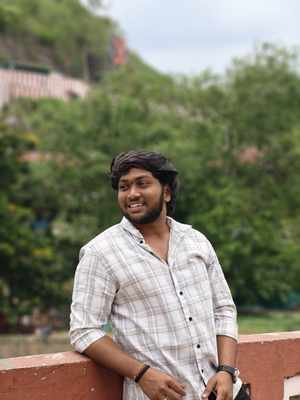

Plan the content
We’ll choose what to include and organize your project details so visitors can understand your work.
I'm Arun, a 3rd-year CSBS engineering student at SRKR Engineering College. I help fellow students turn their skills, projects, and experience into a clean personal website. We can plan the content together and build a simple portfolio you can share with recruiters.
SRKR Engineering College · Bhimavaram
I'm a Computer Science and Business Systems student at SRKR Engineering College, Bhimavaram. I enjoy learning by building practical projects and exploring how data, software and AI can solve real problems. My goal is to grow into roles where I can turn technology and analysis into useful products and decisions.
CSBS · 3rd Year
SRKR Engineering College
Bhimavaram
A practical foundation across programming, databases and productivity tools.
Core programming and problem-solving foundations.
Working toward strong analytics and data workflows.
Areas I'm actively interested in and learning.
Starting with what you already have—your course, skills, projects, and goals—and shaping it into a clear one-page portfolio. I’m a student too, so we can keep the process simple and beginner-friendly.
We’ll choose what to include and organize your project details so visitors can understand your work.
A personal introduction, skills, project cards, and a clear way for people to contact you.
We’ll check the layout on a phone and prepare the site for a shareable link. Final scope and hosting depend on the project.
These are personal work and concepts, not client projects. I’ll add more working demos as I build them.
A project concept focused on managing donor information and making donor records easier to organize.
A smart product-scanning project concept exploring QR workflows and AI/ML possibilities for retail experiences.
This portfolio site, with a responsive layout and a simple assistant grounded in the information on the page.
Gold and Bronze medalist in Basketball.
Digital Campus Ambassador at Corizo as part of an IBM nationwide campus internship campaign.
Continuously building skills toward Data Analyst, Data Science and Full Stack opportunities.
Ask me about Arun's education, skills, projects, achievements, interests and goals. This assistant is grounded in the information on this portfolio and won't invent personal facts.
Want help turning your student projects and skills into a simple portfolio website? Choose the contact method that works best for you.

GOOD TO MEET YOU — I'M ARUN